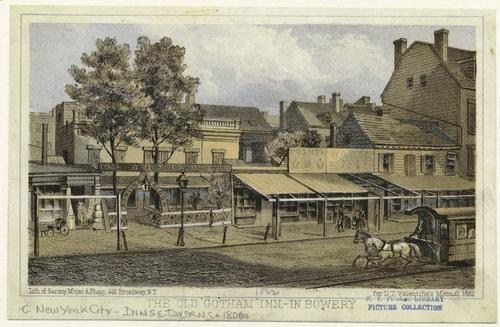
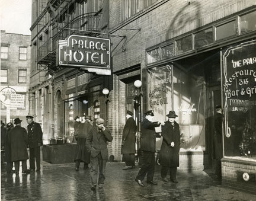

History

In the 17th century 315 Bowery was part of land acquired by the Dutch West India Company known as the Schout’s Bouwery. It was later sold in 1732 to Philip Minthorne who used it as farm land up until his death in 1756 where the land was then sold to John Jacob Astor. Astor divided up the lot in 27 sections giving each of his children 3 sections–the section with 315 was given to his daughter Margaret and her husband Nicholas Romaine. Later in 1805, Nicholas Romaine Jr. would sell the land again to the Trustees of Bowery Village Methodist Episcopal Church. The church conveyed the land to Joseph Graham who served as class leader for the church from 1796 to 1812, Joseph owned several pieces of land on Bouwery and was a volunteer fireman.
Joseph conveyed his Bowery land to William L. Lippincott before his death in 1844. Jacob C. Weeks acquired the houses at 313 and 315 Bowery in 1847 and in 1848, advertised apartments in the upper floors of both buildings. In 1861 William F. Messenger registered a business there under the title “birds” where he held the Bird Fanciers Annual Exhibition in 1862. The Weeks Estate kept the properties, which were converted in 1878 into six-story tenements with ground-floor stores and ten apartments each, until 1934.

Then the two buildings would be joined together in order to create a lodging house. 15 years later in 1949 the joint-building would be turned into the Palace Hotel which became one of the largest flophouses in Manhattan (cheap lodging facilities with minimal amenities). Underneath the Palace Hotel at 315 the Palace Hotel Bar and Grill would open up gaining popularity from its proximity to the lodging which had 105 cubicles with 224 beds.
In 1969 Hilly Crystal would go on to lease the space closing the bar in 1971, only to reopen it in 1973 under the name CBCG.